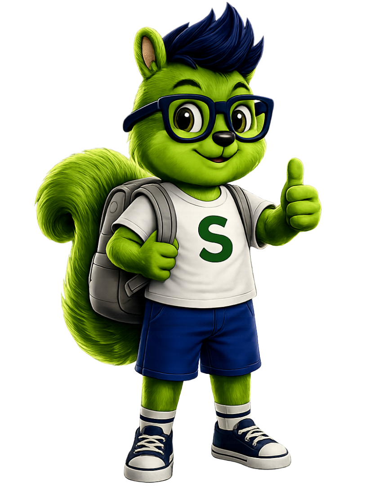

A Professora
Lia
Criativa e adaptável. Quando algo não funciona, ela muda a estratégia. Quando falta material, ela inventa.
Na Skilliu, nossos personagens têm nome, história e propósito.
Lia e Hélio representam o que acreditamos que todo professor pode ser: curioso, resiliente, adaptável e apaixonado pelo que faz.
Criativa e adaptável. Quando algo não funciona, ela muda a estratégia. Quando falta material, ela inventa.
Com jaleco e óculos, mostra que aprender não tem idade. Continua testando, errando, perguntando.
Kyra e Kyro representam o que queremos ver nascer em cada aluno que passa por uma experiência Skilliu: crianças e jovens confiantes e orgulhosos de quem são, do que sabem e do que são capazes de criar.
Raio de luz. Conecta ciência com criatividade. Representa todas as meninas no universo STEAM.

Energia solar. Aprende fazendo, ama testar, não tem medo de errar. A coragem de experimentar.
Kyra e Kyro são verdes, pois desde pequenos se alimentam da Veridia, e esse verde é a sua essência. Quando estão no máximo de suas habilidades, colaborando, resolvendo e aprendendo com propósito, esse verde brilha.
É a cor da Veridia: símbolo do aprendizado vivo.
Queremos mais Kyras. Queremos mais Kyros. Cheios de curiosidade e coragem.
Texto em vermelho = base, precisa de informação da equipe